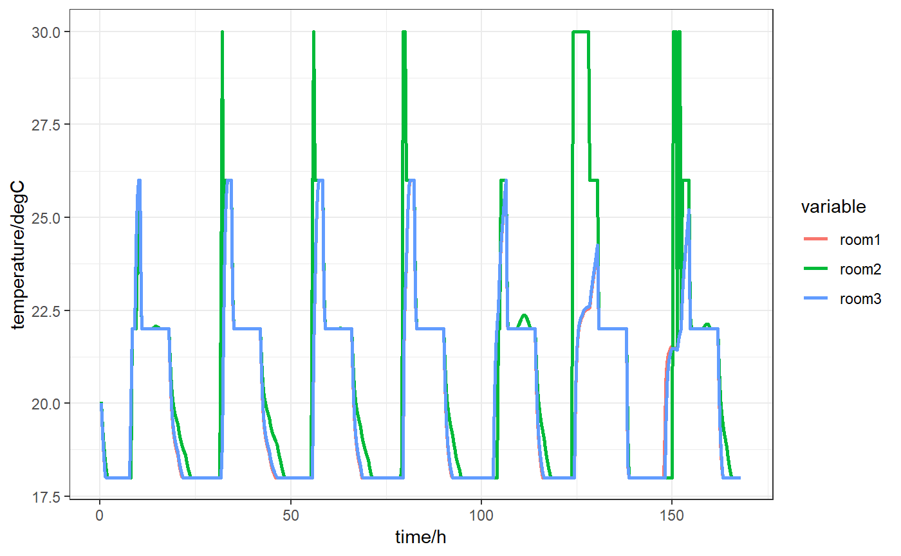
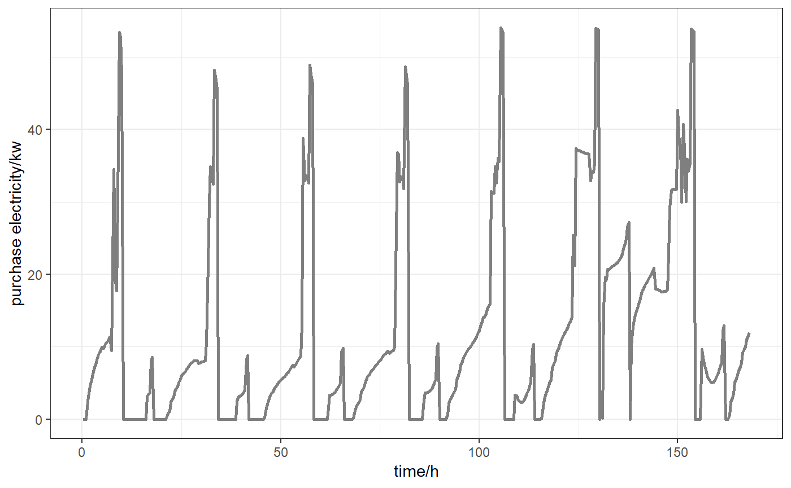
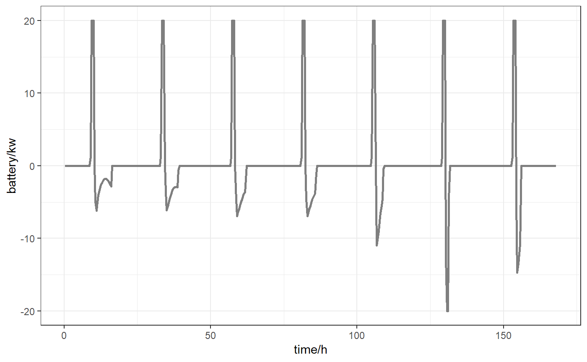
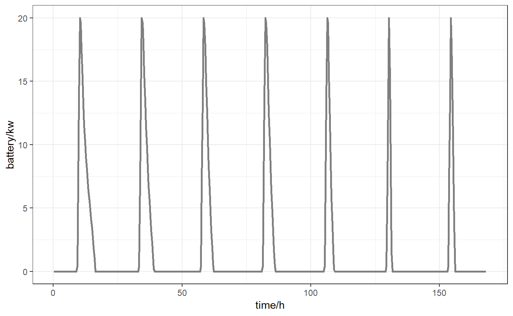

Demand Response with a storage component(simple battery)
Source:vignettes/Demand-Response-Simple-Battery.Rmd
Demand-Response-Simple-Battery.Rmdbuild MPC object and set value
mpc3 <- ehubmpc$new()
mpc3$initialize() #initialize building
mpc3$building$setvalue(ssmodel = ssmodel,
disturbance = as.matrix(ssM$Disturbance),
timestep = as.matrix(ssM$timestep),
x0 = as.matrix(ssM$x0),
continuous = F)
mpc3$building$parameters$ssM## $A
## X__1 X__2 X__3 X__4
## [1,] 9.902461e-01 -0.0341477627 -0.0349554502 3.951889e-04
## [2,] -2.951419e-02 0.7156788201 -0.2578433263 2.262486e-03
## [3,] -3.219325e-02 -0.2622971746 0.7248789148 2.536054e-03
## [4,] 3.809805e-04 0.0023301619 0.0025444660 9.758690e-01
## [5,] 1.891457e-02 -0.0628656346 0.0231790640 -2.064149e-03
## [6,] 9.415195e-05 -0.0002494190 0.0014345088 9.500797e-02
## [7,] 7.096762e-03 0.0821178876 0.1171879265 -1.709680e-03
## [8,] -1.414940e-03 -0.0461965950 -0.0423133686 1.529389e-04
## [9,] -3.454219e-06 0.0002129306 0.0004138108 1.674112e-02
## [10,] 1.767425e-04 0.0022254152 0.0047213932 -6.036526e-05
## X__5 X__6 X__7 X__8
## [1,] 0.0178892463 9.363503e-05 0.0098910014 1.149628e-03
## [2,] -0.0720023206 -3.363144e-04 0.0879888115 -4.100293e-02
## [3,] 0.0202924338 1.355532e-03 0.1297861842 -2.815370e-02
## [4,] -0.0020293604 9.501031e-02 -0.0018832749 -9.557869e-05
## [5,] 0.5609291153 -7.967408e-04 -0.0951714775 -1.661523e-01
## [6,] -0.0010872895 5.137078e-01 0.0001843103 -1.339665e-03
## [7,] -0.0810401914 2.757872e-04 0.7507363194 -1.283953e-02
## [8,] -0.1299511883 -1.047945e-03 -0.0209168479 7.321983e-01
## [9,] 0.0007673638 -1.398990e-01 -0.0001389381 4.422561e-04
## [10,] -0.0105346779 -2.796444e-04 -0.0244580939 -1.606814e-03
## X__9 X__10
## [1,] 8.012291e-06 0.0015968603
## [2,] 2.177648e-04 0.0115291172
## [3,] 4.502494e-04 0.0221839186
## [4,] 1.674068e-02 -0.0003745957
## [5,] 5.713050e-04 -0.0453749877
## [6,] -1.399026e-01 -0.0004026761
## [7,] -1.033560e-04 -0.1199172425
## [8,] 4.584948e-04 -0.1097349396
## [9,] 7.510437e-01 -0.0007157662
## [10,] -6.136057e-04 0.6690089354
##
## $Bu
## X__1 X__2 X__3
## [1,] -1.2863481 -5.127213962 -1.2769706
## [2,] 1.0377469 -23.639870670 1.0662717
## [3,] -1.8578441 -16.397734415 -1.9548543
## [4,] 4.0921562 0.120281388 -3.9828719
## [5,] 8.4911688 -3.849466905 8.3930268
## [6,] -10.2013055 -0.008062870 10.2844215
## [7,] 2.4016345 2.328494503 2.3726917
## [8,] 1.9482616 -0.905524880 1.9478316
## [9,] -0.9551241 0.005801042 0.9583937
## [10,] 0.5214965 0.142189138 0.5228422
##
## $Bd
## X__1 X__2 X__3
## [1,] -1.651993854 -0.3621928554 -6.095515453
## [2,] -0.079582125 0.0327764689 -2.162736402
## [3,] -1.054423437 -0.0709261439 -6.016315856
## [4,] 0.019234965 -0.0156658215 0.106212445
## [5,] 2.055863825 0.1061558756 11.748984753
## [6,] 0.010249986 0.0008007878 0.058716662
## [7,] -0.784684711 -0.3192514486 0.129024228
## [8,] -0.902737950 -0.2629909018 -0.183950087
## [9,] -0.004115286 -0.0130810568 -0.007598811
## [10,] 1.918207414 0.1395914579 -0.836037599
##
## $C
## X__1 X__2 X__3 X__4 X__5
## [1,] -0.003290563 0.001139590 -0.003637673 0.0041945242 0.014123995
## [2,] -0.006394231 -0.028360807 -0.022583134 0.0001867462 -0.003668759
## [3,] -0.003282924 0.001167913 -0.003732634 -0.0040117867 0.014016779
## X__6 X__7 X__8 X__9 X__10
## [1,] -1.224743e-02 0.002897262 0.003087653 -2.151410e-03 0.001451047
## [2,] -1.947594e-06 0.005809756 -0.002515786 1.717696e-05 0.001060827
## [3,] 1.240724e-02 0.002857488 0.003094054 2.152449e-03 0.001451978build battery object and set value
mpc3$battery$setvalue(ssmodel = list(A = as.matrix(0.9800), Bu = as.matrix(0.3333)),
continuous = FALSE,
timestep = 1200,
x0 = 0,
xbmax = 20,
xbmin = 0,
ubmax = 20,
ubmin = -20)
mpc3$battery$parameters## $ssM
## $ssM$A
## [,1]
## [1,] 0.98
##
## $ssM$Bu
## [,1]
## [1,] 0.3333
##
##
## $continuous
## [1] FALSE
##
## $timestep
## [1] 1200
##
## $x0
## [1] 0
##
## $xbmax
## [1] 20
##
## $xbmin
## [1] 0
##
## $ubmax
## [1] 20
##
## $ubmin
## [1] -20
##
## $storage_type
## [1] "simple_battery"
##
## $A_cst
## [1] NA
##
## $B_cst
## [1] NA
##
## $h_cst
## [1] NAset control parameters
N <- 72 #prediction horizon
Tsim <- 504 #simulation/control horizon
nu <- ncol(ssM$Bu)
ny <- nrow(ssM$C)
ECR <- 1e6
cost <- matrix(0.2, ncol = nu, nrow = (N + Tsim))
ymax <- matrix(26, nrow = ny, ncol = (N + Tsim))
ymin <- matrix(22, nrow = ny, ncol = (N + Tsim))
yref <- matrix(24, nrow = ny, ncol = (N + Tsim))
umax <- matrix(15, nrow = ny, ncol = (N + Tsim))
umin <- matrix(0 , nrow = ny, ncol = (N + Tsim))
timestep <- ssM$timestep %>% as.numeric()
time <- (1:nrow(cost))*timestep
for (i in time) {
ifelse(i %% 86400 > 10*3600 & i %% 86400 <=16*3600,
cost[i/timestep,] <- 0.2,
cost[i/timestep,] <- 0.04)
ifelse(i %% 86400 <= 8*3600 | i %% 86400 > 18*3600,
ymax[,i/timestep] <- 30,
ymax[,i/timestep] <- 26)
ifelse(i %% 86400 <= 8*3600 | i %% 86400 > 18*3600,
ymin[,i/timestep] <- 18,
ymin[,i/timestep] <- 22)
}set constraints-comfort control
mpc3$set_parameters(N = N,
Tsim = Tsim,
obj = "cost", #comfort objective function
cost = cost,
ymin = ymin,
ymax = ymax,
yref = yref,
ECR = ECR,
umax = umax,
umin = umin)
mpc3$print_para() ##use for print prediction horizon, control horizon, and ssM is continuous or not## [1] "prediction horizon: 72 * 1200 s"
## [1] "simulation horizon: 504 * 1200 s"
## [1] "state-space continuous: discrete"mpc3$set_mpc_constraint()solve MPC
solu <- mpc3$solve_mpc(control = ecos.control(maxit = 1000L,
feastol = 5e-5,
reltol = 1.5e-5))collect results and plot
temp <- data.frame(time = 1:Tsim,
room1 = t(solu$Y)[,1],
room2 = t(solu$Y)[,2],
room3 = t(solu$Y)[,3])
ele <- data.frame(time = 1:Tsim,
room1 = t(solu$U)[,1],
room2 = t(solu$U)[,2],
room3 = t(solu$U)[,3])
nete <- data.frame(time = 1:Tsim,
nete = colSums(solu$U))
battery_V <- data.frame(time = 1:Tsim,
batte = t(solu$U)[,4])
battery_E <- data.frame(time = 1:Tsim,
batte = t(solu$Y)[,4])
library(reshape2)
library(ggplot2)
hfactor <- 3600/as.numeric(ssM$timestep )
temp %>% melt(id = "time") %>%
ggplot(aes(x = time/hfactor , y = value ,color = variable)) +
geom_line(size = 1) +
theme_bw()+
xlab("time/h") + ylab("temperature/degC")
ele %>% melt(id = "time") %>%
ggplot(aes(x = time/hfactor , y = value ,color = variable)) +
geom_line(size = 1) +
theme_bw()+
xlab("time/h") + ylab("electricity/kw")
nete %>%
ggplot(aes(x = time/hfactor, y = nete)) +
geom_line(size = 1 ,colour = "grey50") +
theme_bw()+
xlab("time/h") + ylab("purchase electricity/kw")
battery_V %>%
ggplot(aes(x = time/hfactor, y = batte)) +
geom_line(size = 1 ,colour = "grey50") +
theme_bw()+
xlab("time/h") + ylab("battery/kw")
battery_E %>%
ggplot(aes(x = time/hfactor, y = batte)) +
geom_line(size = 1 ,colour = "grey50") +
theme_bw()+
xlab("time/h") + ylab("battery/kw")